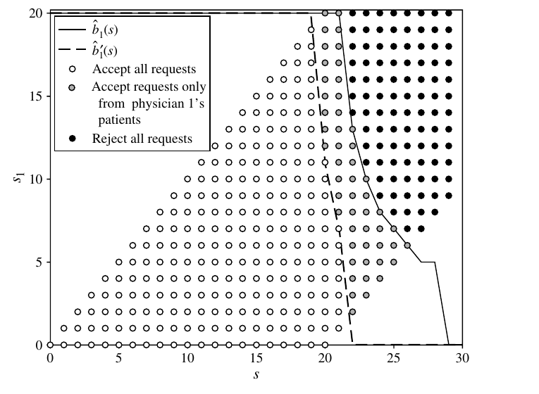
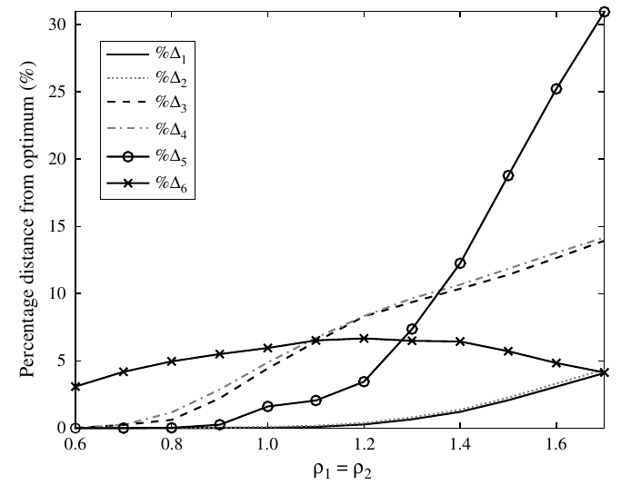

- 医師が 1 人なら予約上限が最適患者の選択が「正規形」という弱い条件を満たせば、予約数が \(b^* = [\kappa - F^{-1}(\eta)]^+\) に達するまで受け、それ以降は断る方策が最適になる（定理 1、系 1）。
- H1 は最適から平均 0.30%医師 2 人の 40 通りの例で、H1 の利益は最適より平均 0.30%、最大 4.09% 低いだけだった。来た順に受ける方策は平均 4.08%、最大 30.94% 低かった。
- 週の収益 17,839.6 → 19,481.5実際の診療所のデータを使い、患者が 3 回まで予約を試みるシミュレーションで、来た順に受ける方策と H1 を比べた（論文 Table 3）。約 9.2% の増加（解説者の計算）。
当日受診を受け入れる診療所では、先の予約をどこまで受けるかが当日の患者の受け入れを左右する
advanced access（当日受診の仕組み）を取り入れた診療所では、患者は空いている当日の枠か、都合のよい先の日の枠かを選べる。待ち時間を短くし、満足度を上げるための仕組みである。そのぶん診療所は医師の枠を先の予約と当日の患者の間でどう分けるかを決めなければならない。先の予約を受けすぎると当日の依頼に回せる枠が足りなくなり、受けなさすぎると待ちが延び、患者が主治医以外にかかる割合が増え、枠が使われないまま終わる可能性も高くなる。
患者が枠を選ぶと、この問題は難しくなる。論文の冒頭の例では、医師 1 人・4 枠の日に、先の予約の電話が 3 件、当日の患者が 1 人来る。患者が好きな枠を選ぶと、最初の患者の枠 1 の依頼を断るのが最適になる場合がある。つまり、患者の選び方によっては、予約数の上限だけで決める方策は最適にならない。論文は、どんな選び方なら単純な方策が最適になるかを調べ、単純な構造がない場合に使えるヒューリスティックを提案する。
1 日分の枠を、時間を逆向きに数える有限期間のマルコフ決定過程として書く
- 枠と期間：医師は \(n\) 人で、医師 \(i\) の枠は \(\kappa_i\) 個、合計 \(\kappa\) 個。予約の受付開始から当日までを \(\tau\) 期に分け、時間は \(\tau\) から 1 へ逆向きに数える。各期の予約の電話は多くても 1 件。
- 患者：\(t \ge 1\) に電話する通常の患者は、特定の医師と時間帯を好む。望む枠が取れなければ予約せず、診療所に罰 \(\pi_1\) がかかる。当日（\(t = 0\)）に来る患者は急ぐと考えており、空いている枠ならどれでも受ける。
- 状態と選択：状態 \(\vec s\) は各枠が埋まっているかどうかの 0-1 ベクトル。医師 \(m\) の患者が状態 \(\vec s\) を見て医師 \(i\) の枠 \(j\) を求める確率を \(P_t^{ijm}(\vec s)\) とする。診療所は依頼を聞いてから受けるか断るかを決める。
- 収益と費用：通常の患者が主治医にかかると \(r_1\)、別の医師なら \(r_1'\)（当日の患者は \(r_2, r_2'\)）。主治医以外にかかると 1 回の受診あたりの収益が約 15% 下がるという調査を引いている。当日の患者を枠に入れられなければ 1 人 \(c\)（残業や救急外来に回す費用）、使われなかった枠には 1 枠 \(\pi_2\) がかかる。\(r_1 + \pi_1 < r_2 + c\) を仮定する。
状態の数は枠の数だけ 2 を掛けた数になる。医師 10 人、1 人 30 枠の診療所では \(2^{300}\) 通りで、後ろ向き帰納法ではそのまま解けない。断られた患者が別の日にかけ直すことはモデルに入れず、あとでシミュレーションで確かめる。
選択の確率には次の「正規形」の条件だけを置く。ある空き枠 \(k\) が埋まっても、残りの空き枠が選ばれる確率は下がらない、という条件である。
独立需要モデル、多項ロジット、確率効用最大化のモデルはどれも正規形である（命題 1）。正規形は「無関係な選択肢からの独立性」（IIA）より弱い条件である。
医師が 1 人なら新聞売り子問題の形の予約上限が最適になり、医師が複数なら全体の予約数に応じた上限で受付を決める
医師が 1 人のとき、当日の患者から得られる収益は埋まった枠の数 \(s\) だけで決まる。当日の需要 \(X\) の分布関数を \(F\) とすると、最終期の価値は次の式になり、\(s\) について凹である。
- 予約上限（定理 1、系 1）：選択が正規形なら、どの時点でも、予約数が \(b^*\) より少なければどの枠の依頼も受け、\(b^*\) に達したら断るのが最適である。先の患者のために枠を残しても得はなく、枠を残す意味は当日の患者のためだけにある。\(b^*\) は \(r_1, \pi_1, \pi_2\) が大きいほど大きく、\(r_2, c\) が大きいほど小さい。
- 医師が複数の場合（定理 2）：主治医以外にかかると収益が下がるので、予約上限の構造は成り立たない。論文は、医師 \(i\) の予約数がしきい値 \(\hat b_i(s)\) 以上になったらその医師への依頼を断るべきことを示した。しきい値は診療所全体の予約数 \(s\) で決まる。
- ヒューリスティック：H1 は 2 つのしきい値 \(\hat b_i'(s) \le \hat b_i(s)\) を使い、医師 \(i\) の予約数がその間にあるときはその医師の担当患者（パネル）の依頼だけを受ける。H2 は全体の予約数によらない 2 つの上限を使う。H3 は多次元の新聞売り子問題の解、H4 は当日の需要の平均だけ枠を残す。FCFS は空いていれば来た順に受ける。上界 UB は主治医以外にかかる損をなくした問題の最適値である。
- 当日の詰め込み枠（命題 2）：1 つの枠に 2 人を入れられる枠を最大 \(y\) 個許すと、最適な予約上限 \(\tilde b^*\) は \(b^* \le \tilde b^* \le b^* + y\) を満たす。上限は増えるが、増える数は追加した枠の数より少ない。

構造にもとづく H1 と H2 はほぼ最適で、実際の診療所のデータを使ったシミュレーションでも H1 の週の収益が最も高かった
まず、患者が 1 回だけ予約を試みる場合を、最適値を後ろ向き帰納法で計算して比べた。医師 2 人、1 人 10 枠、\(\tau = 200\) 期で、1 日を 2 枠ずつ 5 つの時間帯に分け、患者は 1・3・5 番目の時間帯を好む。選択は多項ロジットである。基準の設定では最適値 446.89 に対して、H1 は 0.019%、H2 は 0.084%、H3 は 4.60%、H4 は 4.87%、FCFS は 1.60% 低く、UB は 5.95% 高かった（論文 Table 1）。パラメータを変えた 19 通りと、当日の需要のばらつきを変えた 9 通り（Table 2）などを合わせた 40 通りで、最適との差の平均と最大は次のとおりである。
| 方策 | 平均の差 | 最大の差 |
|---|---|---|
| H1 | 0.30% | 4.09% |
| H2 | 0.39% | 4.35% |
| H3 | 5.14% | 13.93% |
| H4 | 5.44% | 14.17% |
| FCFS | 4.08% | 30.94% |
| 上界 UB | 5.82% | 8.91% |
表1 40 通りの例での最適値との差（論文 5.2.1 節の本文の値）。
医師の負荷が偏っている例では、医師どうしの受付を連動させる H1 が H2 よりかなり良かった。医師の負荷を 0.6 から 1.7 に上げると、負荷が低いうちはどの方策も最適に近いが、負荷が高いと FCFS の差は約 30% まで広がったが、H1 と H2 の差は約 4% にとどまった（図2）。

次に、ミネアポリス・セントポール地域の中規模の診療所（医師 10 人、15 分枠）のデータを使い、患者が別の日に 3 回まで予約を試みるシミュレーションを行った。1 回の反復は 10 年分の運用で、1,000 回くり返した。
| 指標 | H1 | H2 | H3 | H4 | FCFS |
|---|---|---|---|---|---|
| 週の平均収益 | 19,481.5 | 19,111.8 | 18,591.1 | 18,403.8 | 17,839.6 |
| 使われなかった枠（%） | 3.11 | 3.63 | 4.05 | 4.28 | 4.42 |
| 枠を超えた当日の需要（%） | 9.88 | 12.52 | 4.94 | 2.66 | 18.58 |
| 3 回試みても予約できなかった患者（%） | 0.36 | 0.75 | 3.83 | 4.96 | 0.19 |
表2 患者が 3 回まで予約を試みるシミュレーションの結果（論文 Table 3 の一部）。
- 負荷：通常の患者の負荷を共通の倍率で変えると、H1、H2、FCFS では、需要が容量を少し上回るときに利益が最大になった。患者の選択が確率的なので、予約しない患者が必ず出るためである。
- 主治医へのこだわり：医師 12 人の例では、医師の負荷がそろっているなら、患者が主治医にこだわるほど利益は上がった。負荷が偏っているときは、こだわりが強すぎると医師どうしで患者を融通できなくなり、利益が下がった。
- 負荷の偏り：医師の負荷をそろえるほど利益は上がり、その効果は診療所全体の負荷が低いほど大きかった。
患者が医師と時間帯を選ぶ診療所の予約受付を、収益管理の問題として定式化した初期の代表作である
- 扱うもの：当日の依頼と先の予約の枠の取り合い、患者の医師と時間帯の選択、主治医以外にかかる損。1 件の受診は 1 枠で、枠どうしは当日の患者にとって交換可能である。
- 限界：断られた患者のかけ直しは最適化のモデルに入れず、シミュレーションで確かめるだけである。最適な方策が分かるのは医師が 1 人の場合だけで、医師が複数の場合は構造の一部とヒューリスティックにとどまる。
- 美容室の問題への使い方：美容室にも、当日の飛び込み客と事前予約の客、担当の美容師を指名する客がいる。H1 のように「美容師ごとの予約数と店全体の予約数で、受ける客を決める」規則は、そのまま比較の基準になる（解説者の考え）。違いは、論文では埋まった枠の数だけで当日の価値が決まるのに対し、美容室では施術時間分の連続した空きが要り、空き枠の並び方も価値を左右する点である。正規形の条件も、ある枠が埋まると前後の開始時刻が使えなくなる美容室では、そのままは成り立たない可能性がある。
- 関連：Feldman ら（2014）と Wang と Fung（2015）は、受けるか断るかではなく、どの日や枠を見せるかを決める方向へ進めた。
@article{gupta2008revenue,
title = {Revenue Management for a Primary-Care Clinic in the Presence of Patient Choice},
author = {Gupta, Diwakar and Wang, Lei},
journal = {Operations Research},
volume = {56},
number = {3},
pages = {576--592},
year = {2008},
doi = {10.1287/opre.1080.0542}
}
ページの数式と数値は、出版版（Operations Research 56(3), 576–592）の PDF による。オンライン付録（証明など）は読んでいない。書誌は論文の PDF の表記から取った。